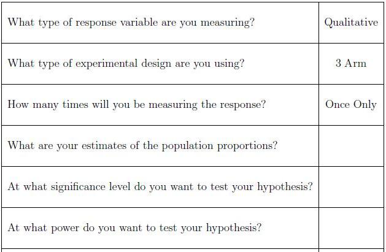

Let's summarize what we know so far. Jill is taking independent random samples from her target population of mice. Then she tests whether or not each mouse gets the disease. Based on this information she will be able to calculate the sample proportion of mice in each group. She is interested in testing the hypothesis that the proportions for all of the treatment groups are equal versus the alternative that they are not all equal. Now we have a clearer picture of how we should go about calculating sample size.
The sample size formula for this type of design is much more complicated. Hence it is our recommendation that Jill schedule a consultation with a statistician. Some things that Jill should think about and some information that she will need prior to her consultation are provided in the following checklist.

-- ErinEsp - 13 Mar 2010